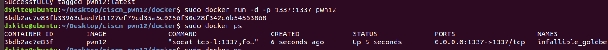

CISCN 2018 华中赛区 Q12
第一次在CTF比赛中尝试解PWN题，先把PWN题的环境放上来，本次虚拟机环境情况为 Ubuntu 18.04 LTS，使用docker配置环境，后续会把整个题解出来
CTF环境Docker复现
本次复现使用 Docker 复现，保证环境可以正常运行，环境Docker原始文件下载：ciscn-q12
步骤1：安装Docker
本次虚拟机环境情况为 Ubuntu 18.04 LTS，安装docker和docker-compose
1 | sudo apt-get install docker docker-compose |

步骤2：运行Docker服务
1 | sudo service docker start |

步骤3：构建Docker环境
我们下载好Docker的环境：ciscn-q12 然后解压到环境根目录，打开终端，运行命令：
1 | sudo docker build -t pwn12 . |

步骤4：运行Docker环境
构建完成docker镜像后，运行环境，使用docker ps查看运行情况
1 | sudo docker run -d -p 1336:1336 pwn12 |

从上图可以看到，我们的docker已经在监听 1337 号端口了。
步骤5：运行不完全的Payload
在比赛的时候我写了一个不完整的payload,只能加载部分的flag,为了验证环境是否安装完成，测试下
1 | from pwn import * |

从图可以看到我们读取了部分Flag
根据出题人的意思，应该到这步就可以了的，但是由于未考虑到环境的FLAG长度，所以使本题目由签到题变成了入门题